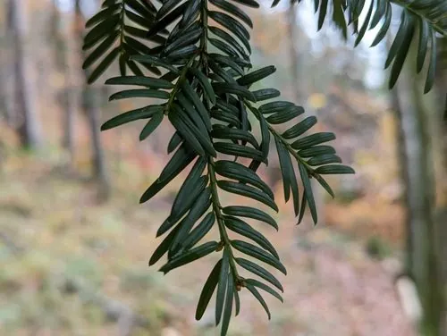

蕨类与裸子植物 · 植物界
欧洲红豆杉 Taxus baccata

欧洲红豆杉树姿浓密、种子外有鲜红假种皮，木材与枝叶含紫杉醇，全株除假种皮外均有毒，需注意安全。
- 分类
- 门裸子植物门纲松纲目柏目科红豆杉科属红豆杉属
- 栖息环境
- 温带林下与山坡，耐阴耐寒，喜排水良好土壤
- 地理分布
- 原产欧洲、北非与西亚，中国有引种栽培
- 保护级别
- IUCN 无危（LC）；中国将红豆杉属所有种列为国家一级重点保护野生植物
物种志
欧洲红豆杉是红豆杉科常绿乔木，高可达 10–25 m，树冠浓密，树皮红褐色、鳞片状剥落。叶片条形、扁平，深绿色，排成两列，叶背有两条淡黄色气孔带。雌雄异株，雄球花球形，雌球花单生。种子坚果状，外被鲜红色肉质假种皮，像一颗小红果，十分醒目。
欧洲红豆杉原产欧洲、北非与西亚，是欧洲最常见的红豆杉，常栽于庭院、教堂与墓地，寿命极长，有些古树树龄超过千年。它耐阴、耐寒，对土壤要求不严，但生长缓慢。欧洲红豆杉的木材坚韧，可供雕刻与家具；枝叶含紫杉醇等生物碱，是提取抗癌药物的原料之一。需要注意的是，全株除红色假种皮外均有毒，误食枝叶或种子会中毒，观赏时应避免儿童误食。
形态与习性
- 树高10–25 m
- 叶条形扁平，排成两列
- 种子外被鲜红色肉质假种皮
- 寿命极长，古树可逾千年
- 毒性全株除假种皮外有毒
趣味知识
- 欧洲红豆杉的种子外有一层鲜红的假种皮，看起来像小红果。
- 它的枝叶含紫杉醇，是提取抗癌药物的原料之一。
- 欧洲红豆杉全株除红色假种皮外都有毒，不能误食。